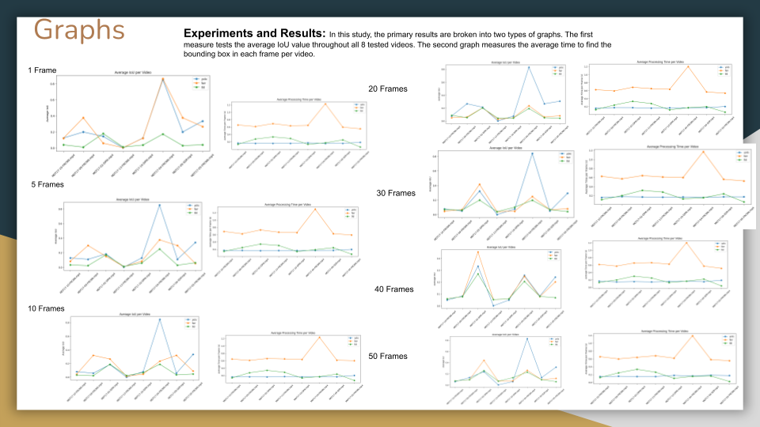
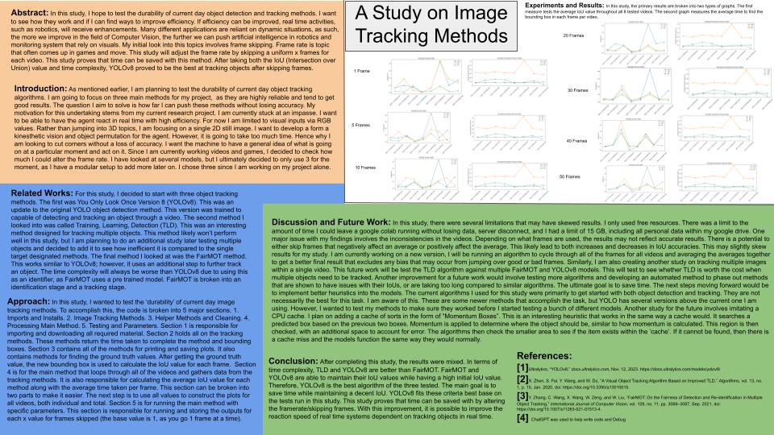
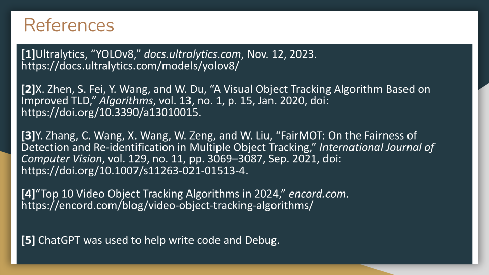

Computer Vision Project: The effects of Frame Skipping on Object Tracking Algorithms
Project Overview
This project is designed to test the efficiency and durability of the Training, Detection, Learning (TLD) algorithm, the FairMOT algorithm, and the You Only Look Once version 8 (YOLOv8) algorithm. This project aims to test the effects of skipping frames on these algorithms.
Methods to test
YOLOv8: YOLOv8 is a single stage-detector that ranks among the most popular object tracking algorithms. The YOLO family of models is based on a CNN architecture that learns to predict object labels and positions with a single pass of the image.
The model v8 follows a similar architecture to its predecessor and consists of various CNN and fully connected layers. It is an anchor-free algorithm, which directly predicts the object’s center rather than an offset from a predefined anchor. Moreover, the algorithm can be used for classification, segmentation, pose estimation, object detection, and tracking.
FairMOT: The fair multi-object tracking FairMOT algorithm uses a pre-trained model like faster R-CNN for detecting objects in the video sequence. It then uses a neural network to extract features from the detected object.
These features are used to track the object across other frames. The branches share the same underlying architecture and receive equal weightage during training.
The FairMOT algorithm treats all classes fairly and provides a balanced performance between the two tasks: detection and tracking.
For this project, I will be using the YOLOv8 algorithm in order to keep the amount of variables fixed.
TLD: TLD is a framework designed for long-term tracking of an unknown object in a video sequence. The three components serve the following purpose:
- Tracker: Predicts the object location in the next frame using information in the current frame. This module uses techniques like mean-shift or correlation filtering.
- Detector: Scans the input frame-by-frame for potential objects using previously learned object appearances.
- Learning: Observes the tracker's and the detector's performance and identifies their errors. It further generates training samples to teach the detector to avoid mistakes in the future.
Study Design
In this study, I wanted to test the ‘durability’ of current day image tracking methods. To accomplish this, the code is broken into 5 major sections.
1. Imports and Installs.
2. Image Tracking Methods.
3. Helper Methods and Cleaning.
4. Processing Main Method.
5. Testing and Parameters.
Section 1
This section is dedicated to get all of the downloads and installs required to run the object tracking algorithms and the methods to find the bounding boxes.
Section 2
This section is dedicated to storing all of the necessary methods/algorithms. This is where the TLD, YOLOv8, and FairMOT methods will be stored. They will also be capable of dealing with frame skips. They should return the time to calculate and the bounding boxes.
Section 3
This method is designed to store all of the helper methods. This includes the methods for generating plots, the method for getting the ground truth values, and the methods required for cleaning the videos to run the algorithms (the dataset used required a method to create an MP4 file.).
Section 4
This section is dedicated to actually running the code. It contains helper methods to run all of the mp4 files and calculate the Intersection of Union (IoU) average values for each algorithm for each image. It is also responsible for returning the average time required to repeat each algorithm for each frame. This is used to create the graph to calculate the average time taken per frame. It is also responsible for returning plots for each method going through each individual video. This can be used for debugging purposes, but they are unable to fit within the poster. (There are a total of 24 additional plots.)
Section 5
This is the final section. It is designed to run and save all of the plots with the varying frame skips. This is similar to a main method of sorts. It runs through all of the methods in an organized manner. It also allows me to save in between runs. That way I do not lose any data if the google colab exceeds its time limit.

Results
Despite the fact that FairMOT uses YOLOv8 as its detector, it was not able to gain a significant advantage. Its results were similar to the YOLOv8 with the two algorithms seeing advantages depending on the video used. As such, the extra cost for the tracking portion does not outweigh using the base YOLOv8 algorithm.
Paper


GitHub Code
References
[1] Ultralytics, “YOLOv8,” docs.ultralytics.com, Nov. 12, 2023. https://docs.ultralytics.com/models/yolov8/
[2] X. Zhen, S. Fei, Y. Wang, and W. Du, “A Visual Object Tracking Algorithm Based on Improved TLD,” Algorithms, vol. 13, no. 1, p. 15, Jan. 2020, doi: https://doi.org/10.3390/a13010015.
[3] Y. Zhang, C. Wang, X. Wang, W. Zeng, and W. Liu, “FairMOT: On the Fairness of Detection and Re-identification in Multiple Object Tracking,” International Journal of Computer Vision, vol. 129, no. 11, pp. 3069–3087, Sep. 2021, doi: https://doi.org/10.1007/s11263-021-01513-4.
[4] “Top 10 Video Object Tracking Algorithms in 2024,” encord.com. https://encord.com/blog/video-object-tracking-algorithms/
[5] ChatGPT was used to help write code and debug.